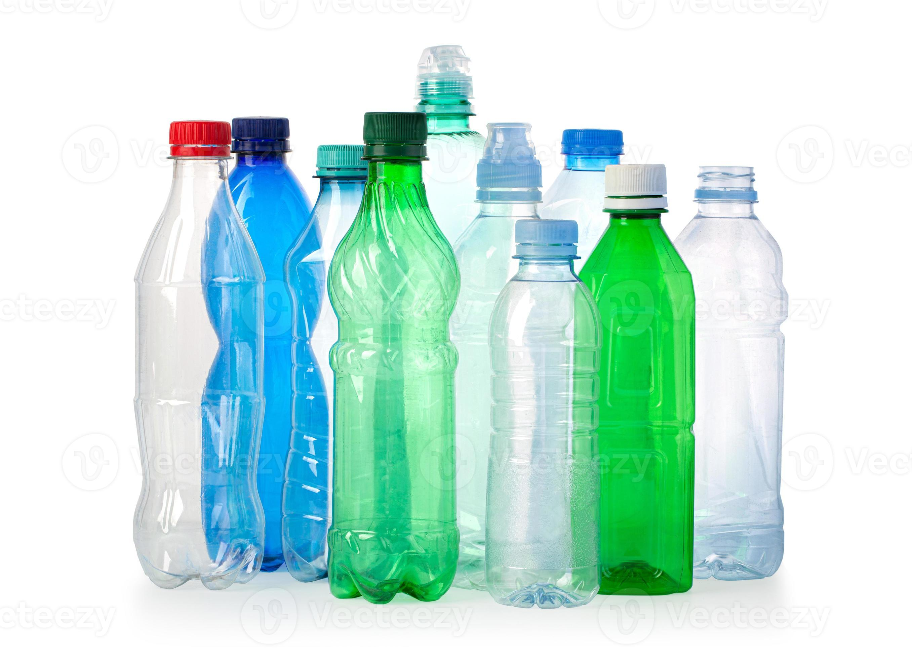
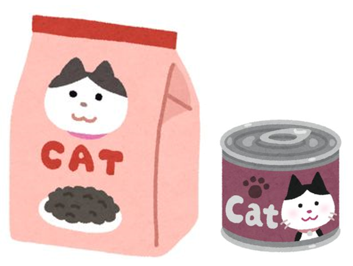

DONATE & HELP OUR CATS
Even a small contribution can make a big difference
Your donation helps provide food, and other essential & veterinary care for stray and feral cats.
Revolut: +356 7925 3603
BOV Pay: +356 7925 3603
Revolut: +356 7925 3603
BOV Pay: +356 7925 3603

BCRS BOTTLES
Donate your eligible BCRS bottles and cans. The proceeds help us provide food and care.
Please get in touch so we can arrange pick-up.

CAT FOOD
You can also support our colonies by
donating cat food (dry & wet).
Please get in touch so we can arrange pick-up.

Donate BCRS Bottles in Malta to Help Dingli Stray Cats
How Can You Help?
Save your eligible BCRS bottles and cans, and get in touch with us to arrange a pick-up. Please keep the containers empty and in a condition suitable for return.
Every Bottle Counts
Whether you collect at home, with friends or at work, your donations can help us continue feeding and caring for stray and feral cats in Dingli.
Arrange a Collection
Call, SMS or WhatsApp us on +356 7925 3603 to arrange a suitable collection. Thanks to our volunteers we can accept donations not only from Dingli, but from all over Malta, so please do get in touch and a volunteer will be assigned to pass by. You can also contact us through Facebook or email.
Not sure which containers are eligible? Check the official BCRS Malta website.
← BACK TO HOME